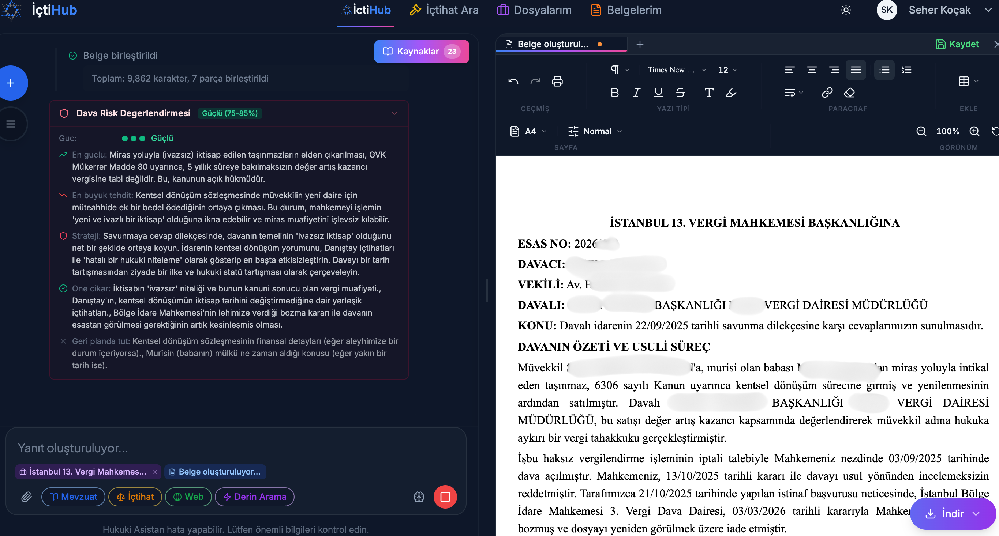

A lawyer's time: how does AI boost productivity in the law office?
A lawyer's scarcest resource is not money but time. The curious part is this: most of that time goes not to practicing law, but to the work that surrounds it. In this piece we will look at where a lawyer's day actually goes, which tasks AI genuinely turns from hours into minutes, and where you need to draw the line while doing so.
Contents
- A lawyer's real time budget
- Where does the time go? The four big consumers
- The tasks AI turns from hours into minutes
- A concrete workflow: from case file to pleading in five steps
- Small practice or large team?
- The right expectation: the draft from AI, the decision from the lawyer
- The Turkish context: UYAP, the Attorneys' Act and client confidentiality
- Where to start? A practical checklist
A lawyer's real time budget
Those outside the profession imagine a lawyer spends the day in the courtroom and engaged in legal reasoning. The reality is far more ordinary. According to data from Clio's 2024 Legal Trends Report, the average utilization rate across the sector is only 37%. In other words, the average lawyer can devote less than three hours of an eight-hour workday to billable legal work. The rest of the time melts away among administrative tasks, file organization, correspondence follow-up and business development.
Beneath this figure lies a simple but painful truth: most of the hours in which a lawyer creates value are overshadowed by work that creates none. This gap is the real heart of the productivity debate. The question is not "should the lawyer think faster," but "how do we reclaim the hours in which the lawyer isn't practicing law."
Where does the time go? The four big consumers
When you single out the tasks that eat up most of a lawyer's hours, four items stand out at the top of the list. Tellingly, all four happen to fall in areas where AI is strong.
- Case law and legislation research: Finding the right decision is often half the battle in winning a case. But locating the precedent you need among millions of decisions takes a long time and carries the risk of something slipping through the cracks.
- Drafting pleadings and contracts: Mostly a matter of adapting a similar text rather than writing from scratch — repetitive work that nonetheless demands care.
- Reviewing and summarizing files: Reading a file of hundreds of pages and extracting its essence can devour half a lawyer's day on its own.
- Routine correspondence: Updating the client, sending a standard reply to the opposing party, writing to an expert witness. Small one by one, enormous in aggregate.
Clio's same report backs this intuition with numbers: roughly 74% of work billed by the hour is theoretically automatable with generative AI, while tasks such as documentation, information gathering and data analysis make up an average of 66% of hourly work. This means automation is not a luxury but the single biggest opportunity on the table.
Most of the tasks that eat up a lawyer's time call for patience, not legal genius. And that is exactly the part AI can take over.
The tasks AI turns from hours into minutes
The phrase "hours become minutes" can sound like a marketing slogan; yet there are real practices that demonstrate it with concrete examples. One example cited in Thomson Reuters' field work is striking: David Heim, a partner at the 13-lawyer firm Bochetto & Lentz, recounts how he summarized a dense 50-page report with AI and prepared a draft letter, completing in "under an hour" a job that would have taken half a day. The picture is similar at other firms: some use AI to produce case summaries and chronologies, while others say they now do "in minutes what used to take hours."
This gain is not just a one-off anecdote; it is a trend measured across the sector. According to Wolters Kluwer's 2026 Future Ready Lawyer Survey, 62% of legal professionals report saving between 6% and 20% of their time per week with AI. Thomson Reuters' Future of Professionals 2025 report, based on 2,275 professionals from more than 50 countries, paints an even bigger picture: the average lawyer expects to save roughly 240 hours a year with AI, worth around $19,000 per lawyer. Adding that this expectation stood at 200 hours in 2024, we can see the bar rising every year.
A concrete workflow: from case file to pleading in five steps
Rather than speak in the abstract, let us follow a typical workflow step by step. Seeing where AI comes into play as a lawyer turns a thick case file into a pleading makes the real picture clearer.
- Upload the file: The case file, its attachments and related documents are imported into the system.
- AI analyzes and summarizes: The chronology of events, the parties, the claims and the file's critical points are extracted.
- Precedents and case law are suggested: Decisions matching the legal nature of the dispute are brought up along with their reasoning.
- A draft pleading is generated: The summary, the claims and the precedents are brought together to form an initial draft.
- The lawyer revises and approves: The legal strategy, the tone and the ultimate responsibility belong to the lawyer. The draft is a starting point, not an end point.
Note that four of the five steps are preparation and one is decision. AI shoulders the raw work in the first four steps, while in the fifth the lawyer's judgment takes over. If you are curious about how meaning-based case law search works, the pieces What is RAG and What is İçtiHub explain this mechanism clearly.

An assistant, not an archivist — a partner
A good legal assistant doesn't merely fetch documents; it understands the question you ask, anchors its answer to real sources and provides reasoning for the "why is it so" question. The difference is like that between a search engine and a trainee: one finds, the other helps you think. Even so, the final word always belongs to the lawyer.
Small practice or large team?
AI's return takes a different shape depending on the size of the practice. For a lawyer working alone, the issue is leverage: enabling one person to produce the work that several assistants would otherwise turn out. Here AI truly acts as a "team multiplier"; it grows the practice's work capacity without growing its physical capacity.
In large teams, the real gain lies in standardization and volume management. Having dozens of lawyers produce drafts of the same quality, summarizing files consistently and keeping a heavy workload from turning into a bottleneck become more critical as scale grows. In both scenarios there is a shared observation: according to Thomson Reuters data, organizations with a clear and visible AI strategy achieve roughly 3.5 times more return on investment (ROI) than those without. So the difference comes not so much from using the tool as from grounding it in a deliberate plan.
| Dimension | Solo lawyer / small practice | Large team |
|---|---|---|
| Primary gain | ✓ Leverage: more work with one person | ✓ Standardization and volume management |
| Main bottleneck | Personal time and capacity | Consistency and coordination |
| Priority | ✓ Delegate the single most time-consuming task | ✓ Establish shared templates and a verification process |
| Risk | Tendency to skip verification | Errors spreading at scale |
The right expectation: the draft from AI, the decision from the lawyer
The part up to here is optimistic; now let us draw the line. AI's best-known danger in law is the phenomenon called "hallucination": the model fabricating a non-existent precedent with full confidence. And this is not a theoretical concern. In the Mata v. Avianca case in the United States, all six of the precedents produced by ChatGPT turned out to be fabricated. In a more recent example, two lawyers in Oregon were ordered to pay a total of $110,000 in sanctions and attorneys' fees over pleadings containing 15 fabricated precedents and 8 fabricated citations. According to tracking by LexisNexis and Bloomberg Law, there are more than 700 recorded cases containing AI-generated fabricated content.
That is why there is one non-delegable rule: verifying the output is the lawyer's duty. As a lawyer from Hawaii Disability Legal Services put it, "You always have to double-check the work; you still have to read the decisions yourself." AI produces the draft and the preliminary analysis; the lawyer makes the legal decision and bears the responsibility. This is not merely a productivity choice but a line that flows from the very nature of the profession.
At EcoFluxion, we design our products precisely to preserve this line: with a RAG architecture that grounds answers in real decisions and legislation, we aim to lower the risk of fabrication, while always leaving the final word to the lawyer. How good a tool is is measured not by how much it spares you from thinking, but by how much room it opens for you to think better.
The Turkish context: UYAP, the Attorneys' Act and client confidentiality
Turkey's current legal framework — the Attorneys' Act, the Union of Turkish Bar Associations (TBB) Code of Professional Conduct and the disciplinary regime — does not prohibit the use of AI. But it leaves professional responsibility entirely with the lawyer. The defense "I used AI" is regarded as valid neither ethically nor legally. Beneath every text produced stands the responsibility of the lawyer who signs it.
Two points here are especially critical. The first is confidentiality: the obligation to keep client secrets under Article 36 of the Attorneys' Act and Article 37 of the TBB Code of Professional Conduct becomes far more delicate alongside AI tools that process large amounts of data. Uploading a client file to a random tool often means coming to the threshold of a confidentiality breach. The second is integration: domestic legaltech tools (such as Apilex, Lawantra and Hukas) can produce pleadings and contracts in PDF, DOC and UYAP document formats; some can automatically pull case and enforcement files from UYAP, transferring information on parties, hearings, site inspections, judgments and appeals into local automation.
On the confidentiality side, our stance is clear: at EcoFluxion we take KVKK compliance, AES-256 encryption in transit and at rest, and the principle that user data is never used to train models as fundamentals. In law, trust is not a feature of the product but a precondition. If you would like a more detailed look at why models tailored to the Turkish legal language matter, the piece Turkish AI is a good starting point.
Key takeaways
- The average lawyer can devote less than 37% of the day to billable legal work; the rest goes to administrative tasks.
- Case law research, drafting, file summarization and routine correspondence are both the most time-consuming tasks and the ones most suited to automation.
- In real practices, half a day's work can drop below an hour and hourly tasks down to minutes; 62% of professionals report weekly time savings.
- AI produces the draft, the lawyer makes the decision and bears the responsibility. The risk of hallucination is real and being penalized; verification is non-delegable.
- There is no legal barrier in Turkey, but responsibility lies with the lawyer; client confidentiality (Attorneys' Act Art. 36) and privacy are the most critical heading.
Where to start? A practical checklist
Bringing AI into your practice need not be a massive transformation project. On the contrary, the most successful transitions begin with small, measurable steps. Here is a workable roadmap:
- Start with a pilot task: Pick not the whole process but the single most time-consuming task (file summarization or precedent search, for example) and try it there.
- Verify every output: Make confirming case law and citations from their source — in particular — an unchanging part of the process.
- Set up a confidentiality policy: Clearly define which documents can be uploaded to which tool, within the framework of the client confidentiality obligation.
- Measure the return in hours: Instead of "did it work," ask "how many hours a week did I get back." A visible strategy multiplies the return.
Will AI replace the lawyer?
No. AI takes on the most time-consuming preparatory work; legal reasoning, strategy and the final decision belong to the lawyer. Four of the five steps in a workflow are preparation, one is decision — and the one who makes that decision is human.
How is the risk of fabricated case law managed?
With two layers: using source-based (RAG) systems significantly lowers the risk of fabrication, but is not enough on its own. Verifying every citation and decision from its original source is the lawyer's non-delegable duty.
Is it safe for client confidentiality?
It depends on the tool's privacy architecture. Because of the confidentiality obligation under Article 36 of the Attorneys' Act, how the data is encrypted, where it is stored and whether it is used for model training must always be clarified. At EcoFluxion, user data is not used for model training.
Is it worth the investment for a small practice?
Usually yes, because the leverage effect is felt most in small teams. A solo lawyer can produce work that previously required additional staff. What matters is measuring the return in hours gained and proceeding with a clear usage plan.
In short: AI does not give a lawyer a new mind; it gives back the hours that were stolen from them. It takes over the most exhausting tasks, from case law searches to file summaries, so the lawyer can focus on what they should really be doing — namely, practicing law. If you are curious about the technology behind this vision, you can continue with the pieces What is İçtiHub and What is EcoFluxion.